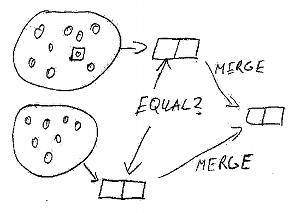

We are currently witnessing fundamental changes in human society. Common shared values are lost, general ideologies disappear, technical progress accelerates. And at the same time the systemic inter-dependencies increase, global connections grow and the amplification of power and error roar. Change in general has become a fundamental dynamic. But our concepts of organizing societies have not progressed for the last one hundred years.
There are two basic models of organization available for the future. The old, monolithic model of top-down law, and the networked method of RuleScaping. Usually discussions about political architecture focus on who selects those who make decisions. Democracy - even for global governance - is the one contender which gets most support, because it promises the participation of everyone in selecting those that rule, or even the rules itself.
However, there is one more important question to ask and answer. Not who selects the rulers. But what defines jurisdiction.
The old model claims that jurisdictions are fixed and rather slow changing. The focus lies on the geographical territory first, and second on the participants in the political process - the citizens. Laws - usually created at the top of the political hierarchy - are applied to the whole territory and all its inhabitants.
Changing the law is a tedious process, requiring rounds of compromise-making and selling opinion to the population. After a new law comes into effect, it enters a stiffening process that makes it harder to change because interest groups and bureaucracies get established around it. In addition, the body of law begins to shape the body politic, by defining acceptable values and procedures.
One can thus characterize the monolithic order as a slow cumulative feedback system that is focused on the territory as the defining factor of jurisdiction. The affected persons are united by governmental power (executive force) under a concept of one law, one nation, one country.
A number of problems result from this method of societal order that are caused by the underlying assumptions of this model and not by the specific implementation of it - be it democratic or not.
It is our declared opinion, that this model is not just inappropriate for a highly dynamic world that we experience in the 21st century,
but that it is in itself dangerous for peace, progress and potentially survival.
However, any alternative model will not appear through the evolution of the current system, nor will it be the result of general political
movements. Instead, alternatives have to be modeled and demonstrated in reality to inspire change, to discover and hold in store
solutions in case of systemic failure.
The network has become the metaphor of the 21st century, and it has proven itself valuable and matching. Instead of defining jurisdiction through geographic territory and citizenship acquired by birth or complex immigration laws, network-based rule-making focuses on specific individuals (the nodes) and the relationships they have with each other (links).
Ordering of society is thus brought directly to the level were interaction exists, between individuals. Instead of monolithic top-down law to apply to an artificially defined group, groups agree on shared rules because they are interconnected and influence each other. Rules are therefor motivated by the individual wish to interact with each other socially or economically, and the scope and complexity of rules is reduced, containing only applicable elements that affected individuals already are familiar with.
RulesScaping can be characterized by the focus on individuals and their relationships as defining jurisdiction, shared values instead of common law, solidarity through shared values instead of forced unity, and a multitude of highly dynamic relationships and agreements - always adaptive to changes in the environment.
While this first appears to be much more complex than the monolithic approach, it is not less efficient because the number of rules (affecting one individual) is decreased, knowledge of rules is increased and adherence supported through the direct participation and voluntary adoption motivated by increasing one's own network of relationships.
This model presents several advantages over the monolithic model:
Nevertheless, RuleScaping requires a fundamentally different process for setting up and maintaining bodies of rules. This process is directly inspired by how autonomous communication networks are created and maintained currently, thus building on decades of experience.
Participation and application of societal order within a RuleScaping model builds on three fundamental operations. A person (individual, cooperation, property) subscribes to a specific ruleset by deciding to adhere to it. In reverse, one can unsubscribe from a ruleset when it becomes preferable to do so. Any of these changes, subscription and un-subscription need to be declared to the connected nodes and potential conflicting agreements resolved before the change takes effect and becomes enforceable.
Given a number of individuals, properties and groups that have selected a certain ruleset for themselves, changes to rules are introduced by forking (copying and modifying) the previous ruleset and offering it as alternative choice. Nodes can now select the new ruleset if they find it preferable. If both rulesets remain compatible to each other, both networks can remain connected to each other by applying mutual rules while applying differing rules internally.
This does however require certain shared values - elements of shared preferences and definitions - that serve as common ground for interactions.
Forking is the only method by which rulesets can be changed.
In those cases where, after a fork operation, the resulting rule-sets are incompatible, both networks are required to split and insulate from each other so that spillover and conflict are reduced. Insulating from each other requires cutting of relationships/links, which is usually not preferable for members because social and economic capital and opportunity is restricted.
It is therefor in the interest of most nodes to find and define a common ground to establish compatibility and to remain connected. This way peaceful cooperation is incentivized, with the exception of nodes that are clearly malicious and that will in result be insulated from and by other nodes.
Historically this has been a common part of political systems, be it ostracism in antique Greece or the Outlawing and Shunning known in medieval Europe.
To counter the forking process when rulesets change, merging is applied in situations where rulesets are found that are fully  interchangeable. This reduces the number of total rulesets available and increases the possible connections between individuals.
Since rulesets can be "domain-specific", for example one ruleset applying to neighborhood relationships and another to commercial connections, the combination of fork- and merge-operations incentives the reduction of rulesets to the minimum necessary body of agreements for specific relationships. This increases flexibility and adaptability while at the same time increasing adherence. People are more aware of the rules that apply to them at any one time and rules are specific enough to not hinder progress and interaction but instead support both.
It is important to emphasize that the selection of rulesets is available to every individual node - be it person, property or commercial entity. This makes a certain protocol necessary so that connected nodes are duly informed about the change in the relationship so that negative effects are prevented. This process is called "Synchronization".
Before a node moves from one ruleset to another, it will have to notify connected nodes of this change and finalize any standing obligations. For example, contractual agreements that would conflict with the new ruleset need to be fulfilled or terminated before the change can take effect.
After synchronization has taken place, the change of ruleset can be executed without creating new sources of conflict.
While this process appears cumbersome and expensive, it is not to be expected to happen very often. Furthermore it is only necessary in those cases where former and later ruleset are fundamentally incompatible. However, this operation does not necessarily entail having to physically move. Since different rulesets can exist within the same geographic area and because they can be domain-specific, physical and social changes are minimized.
Central to RuleScaping are three core agreements that ensure that errors can be caught and conflicting rule-sets can coexist.